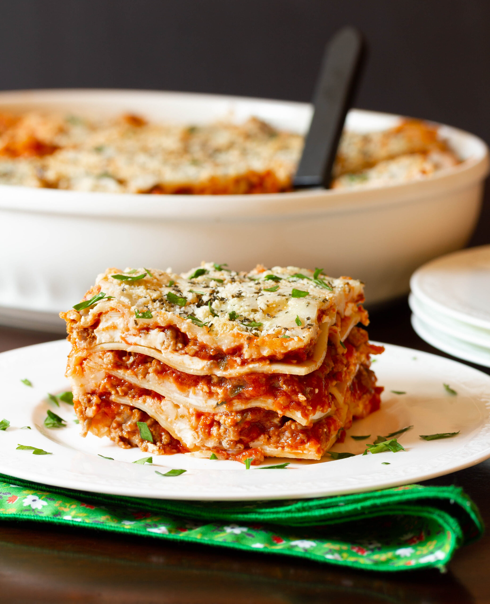

Lasagna Recipe

Yield: 8-10 Prep Time: 40 Minutes Cook Time: 40 Minutes
This cheesy, saucy lasagna gets its wonderful flavor from a blend of beef, Italian sausage, three cheeses, and the secret ingredient, cottage cheese!
INGREDIENTS
- 1 lb. ground beef
- 1 lb. Italian sausage
- 1 yellow onion, chopped
- 3 cloves garlic, minced
- Pinch red pepper flakes (optional)
- 24 ounce jar your favorite pasta sauce (I like a marinara)
- 1 teaspoon oregano
- 1/2 teaspoon black pepper
- 1/2 teaspoon Kosher salt
For the filling:
- 1 1/2 cups full fat small curd cottage cheese
- 1 egg
- 1/2 cup shredded Parmesan cheese
- 1 teaspoon dried parsley
- 1/2 teaspoon salt
- 1/2 teaspoon black pepper
For the lasagna:
- 12 lasagna noodles
- 3 cups shredded mozzarella cheese
- 2 cups shredded baby Swiss cheese
INSTRUCTIONS
- Preheat oven to 350 degrees. Spray a 9 x 13 inch baking dish with cooking spray.
For the sauce and noodles:
- Combine the ground beef, Italian sausage, and onion in a large, deep sauce pan. Cook over medium high heat, breaking apart the meat with a spatula, until no pink remains. Drain any excess fat off the pan, then stir in garlic, pasta sauce, oregano, pepper, and salt. Heat through then reduce heat to low. Allow the sauce to simmer while you prepare the rest of the ingredients.
- Bring a large pot of water to a boil and add a fat pinch of salt and swirl of oil (this helps keep the noodles from sticking.) Add the noodles to the pot and cook for about 2 minutes less than the package directions. Drain noodles then lay them out on aluminum foil so they'll be ready to go later.
For the filling:
- In a medium bowl, stir together the cottage cheese, egg, Parmesan cheese, parsley, salt and pepper. Set aside.
To layer:
- Spread a very scant layer of meat sauce on the bottom of the pan. Top with 4 noodles laid lengthwise in the pan. Spread half the cheese on top followed by 4 more noodles. Spread half of the remaining sauce over the noodles. Spread all of the cottage cheese mixture on top of the sauce, followed by 3 more noodles. Finish with the remaining sauce and cheese. Bake in the preheated oven for 35-40 minutes or until cheese is melted and browned.